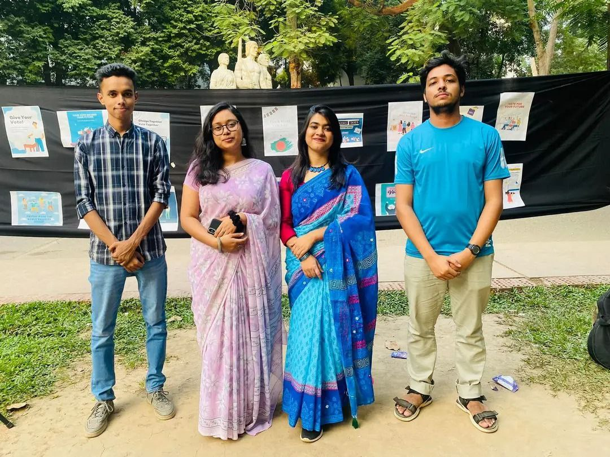
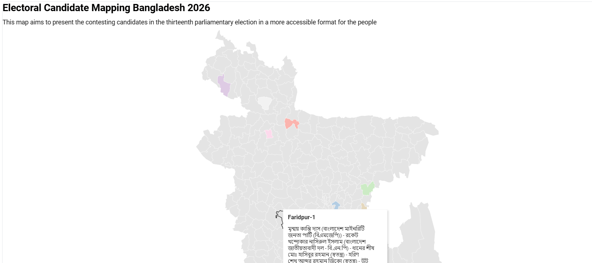
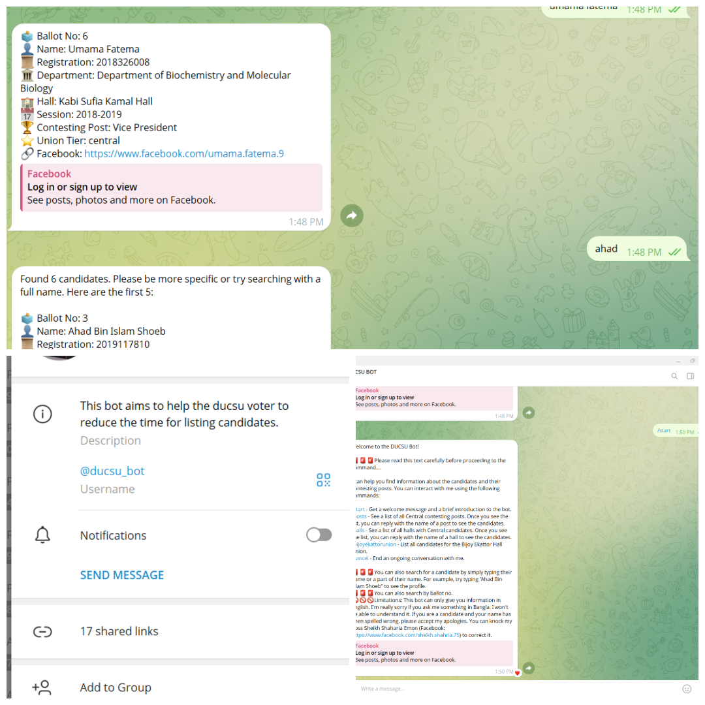
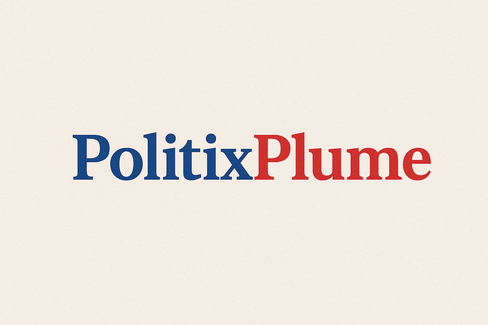

Activities

Youthful Democracy
This project was part of my learning in the Democracy from Theory to Practice course. At the end of the course, I worked in a four-member team to implement this action project. The main objective was to implement our learning into action. We organized a gallery walk and a mock voting event in an open environment at the Dhaka University Campus. The objective was to motivate first-time voters to participate in the Parliamentary Election 2024 in Bangladesh.

Candidate Mapping
This work focused on mapping the candidates for Natioanl Parliamentary Election 2026. This map includes candidate's name, party name and their symbols. This work started with scrapping the data from Bangladesh Election Commission website and then cleaning the data for presentation. After that, the data was presented in map using Datawrapper and published in PolitixPlume website.

DUCSU-BOT
I did this project to help the voters of Dhaka University to access the candidates' info easily. This project picturizes most about my aspiration to use technology for political domain. In the Dhaka University Central Students' Union (DUCSU) election 2025, one voter has to vote 41 candidates( 28 for central and 13 for hall union) for different posts. But there were more than 2000 candidates against these posts. So, I made a chatbot in telegram platform through python with the integration of the candidates data. The bot could reply based on those data. Though I couldn't train the bot with the whole data, I managed to train it with the central candidates' info and one hall candidates' info. The bot successfully replied to the queries of the users( including ballot no., name, session, department, hall, facebook id link etc.). The bot was quite successful in it's purpose as it was used by thousands of students. I launched the bot just 4 days before the election and it was used by more than 1000 students in those 4 days.
Current Projects

PolitixPlume
This is a web platform which is in the end of production process and will be resleased shortly. This project aims to foster a matured political culture in Bangladesh. The main idea here, is to collect knowledge from the young and expert, then disseminate it to the greater society. I am creating this platform to facilitate a rich political culture and equitable as well as quality political education to the young learners.

Political Violence Trend Analysis
This is a continuous project in which I have been working from 2021. Throughout this process I have worked under MGR funded by UKAID and USAID (in different projects). But now, I feel I can still do much with this political data in order to improve the political culture of Bangladesh. This project will be integrated into the web platform 'PolitixPlume' as a dashboard section briefly.